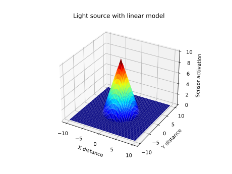
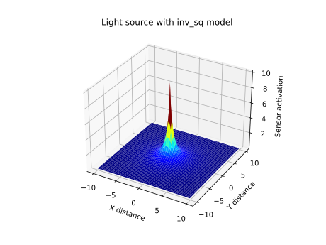

Sources of stimuli and sensors¶
Stimulus class¶
-
class
Sandbox.Stimulus(x: Optional[float] = None, y: Optional[float] = None, theta: Optional[float] = None, is_on: bool = True)[source]¶ An abstract class to represent a source of sensory stimulation.
-
__init__(x: float = None, y: float = None, theta: float = None, is_on: bool = True)[source]¶ - Parameters
x (float) – The x-coordinate of the stimulus. Defaults to
None.y (float) – The y-coordinate of the stimulus. Defaults to
None.theta (float) – The angular orientation of the stimulus. Defaults to
None.is_on (bool) – A flag which can be use to determine whether or not a stimulus can be detected. Defaults to
True. This allows for the stimulus to be turned on and off, but the response to the state of this flag is determined elsewhere, e.g. inLightSource- a sensor implementation can choose to ignore this flag and detect a stimulus even when it is not on.
-
get_data() → dict[source]¶ A method to return the data of the stimulus. Note: this is not likely to be particularly useful, as it only contains the original state, as recorded by
System, and the current state of “is_on”.- Returns
A dict containing the data returned from
Sandbox.System.get_data(), plusis_on.- Return type
dict
-
get_distance(x: float, y: float) → float[source]¶ A method for finding the Euclidean distance from the given xy-coordinates to the position of this sensor, assuming it has position - this method should not be invoked on an instance of
Stimuluswhich does not have position.- Parameters
x (float) – The x-component of the position to find the distance from.
y (float) – The y-component of the position to find the distance from.
- Returns
The distance.
- Return type
float
-
LightSource class¶
-
class
Sandbox.LightSource(x: float, y: float, theta: Optional[float] = None, brightness: float = 1, gradient: float = 0.01, model: str = 'inv_sq', is_on: bool = True, colour: str = 'yellow', label: Optional[str] = None)[source]¶ A subclass of
 Stimulus,LightSourceis a class which represents a light source. It is possible to set the “model” of intensity of aLightSourceto be either an inverse square law of decay with distance, or a linear one, or for the light to be detected with constant brightness regardless of distance.-
__init__(x: float = None, y: float = None, theta: float = None, is_on: bool = True)[source]¶ - Parameters
x (float) – The x-coordinate of the light.
y (float) – The y-coordinate of the light.
theta (float) – The orientation of the light. In this implementation, this is unused, as a
LightSourcecan be detected from any angle (although the same will not necessarily be true of its subclasses).brightness (float) – The brightness of the light, at its own coordinate.
gradient (float) – The gradient of brightness decay with distance, when the linear model is used.
model (str) – The model.
inv_sq,linear, andbinaryare valid models.colour (str) – The colour of the light. Note: this is for drawing only - no system currently implemented in Sandbox can detect a light’s colour.
label (str) – A light source’s label defines a group. Any
LightSensorwith the same label attribute will detect all, and only, light sources in that group. ALightSensorwith no label will detect anyLightSourcein its list, regardless of label.
-
draw(ax) → None[source]¶ A method to draw the light source in the specified matplotlib axes. A
LightSourcewhich is switched on is drawn as a circle with colour specified by the light source’scolourattribute, with a smaller circle in its center which is orange coloured. ALightSourcewhich is not on will have its outer circle coloured in grey.- Parameters
ax (Matplotlib axes.) – The Matplotlib axes to draw the light on.
-
get_brightness_at(x: float, y: float) → float[source]¶ A method to get the brightness of the light (as it is perceived) at the given xy coordinates, according to the light source’s
model.- Parameters
x (float) – The x-component of the position to find the brightness at.
y (float) – The y-component of the position to find the brightness at.
- Returns
The perceived brightness at the given coordinates.
- Return type
float
-
get_data() → dict[source]¶ Get the
LightSource’s data. This method, if used, relies on the assumption that theLightSourceand its properties are static.- Returns
The
LightSource’s data in dict form.- Return type
dict
-
inv_sq_model(dist: float) → float[source]¶ A method to find the perceived brightness of the light source at the given distance, when the inverse square decay model is used.
- Parameters
dist (float) – The distance from the light source.
- Returns
The perceived brightness.
- Return type
float
-
linear_model(dist: float) → float[source]¶ A method to find the perceived brightness of the light source at the given distance, when the linear decay model is used.
- Parameters
dist (float) – The distance from the light source.
- Returns
The perceived brightness.
- Return type
float
-
pygame_draw(screen, scale: float, shiftx: float, shifty: float) → None[source]¶ A method to draw the light source in the specified PyGame display. A
LightSourcewhich is switched on is drawn as a circle with colour specified by the light source’scolourattribute, with a smaller circle in its center which is orange coloured. ALightSourcewhich is not on will have its outer circle coloured in grey.- Parameters
screen (PyGame display) – The PyGame display to draw on.
scale (float) – The scale to draw at.
shiftx (float) – The offset from centre in the x-axis for drawing.
shifty (float) – The offset from centre in the y-axis for drawing.
-
reset() → None[source]¶ A method to reset the
LightSourceto its original state.
-
{kind=link}
{kind=link}
Sensor class¶
-
class
Sandbox.Sensor(x: Optional[float] = None, y: Optional[float] = None, theta: Optional[float] = None, colour: str = 'red', radius: float = 0.2, enabled: bool = True)[source]¶ An abstract class for representing sensors.
-
__init__(x: float = None, y: float = None, theta: float = None, colour: str = 'red', radius: float = 0.2, enabled: bool = True)[source]¶ - Parameters
:param theta:The initial angular orientation of the
Sensor, defaults toNone. :type theta: float- Parameters
colour (str) – The colour of the sensor, for drawing.
radius (float) – The radius of the sensor, for drawing.
enabled (bool) – A flag for specifying whether or not a sensor is enabled. Only the attribute is implemented here - how to use it is a decision for subclasses, e.g. in
LightSensor.
-
draw(ax) → None[source]¶ A method to draw the sensor in the specified matplotlib axes, as a small coloured circle.
- Parameters
ax (Matplotlib axes) –
-
get_data() → Dict[str, Union[float, List[float], str]][source]¶ A method to get the sensors data, in the form of a dict.
- Returns
The sensor’s data, which includes the data returned from
Sandbox.System.get_data(), as well as the sensor’s colour and radius (which are both assumed to be static).- Return type
dict
-
pygame_draw(screen, scale: float, shiftx: float, shifty: float) → None[source]¶ A method to draw the sensor in the specified PyGame display, as a small coloured circle.
- Parameters
screen (PyGame display) – The PyGame display to draw on.
scale (float) – The scale to draw at.
shiftx (float) – The offset from centre in the x-axis for drawing.
shifty (float) – The offset from centre in the y-axis for drawing.
-
LightSensor class¶
-
class
Sandbox.LightSensor(light_sources: List[Sandbox.stimuli.LightSource], x: float, y: float, theta: float = 0, FOV: float = 6.283185307179586, noisemaker: Optional[Sandbox.noise.NoiseSource] = None, label: Optional[str] = None, enabled: bool = True)[source]¶ A class which represents a light sensor.
LightSensorinherits both fromSensorandFOV_thing.-
__init__(light_sources: List[LightSource], x: float, y: float, theta: float = 0, FOV: float = 2 * math.pi, noisemaker: NoiseSource = None, label: str = None, enabled: bool = True)[source]¶ - Parameters
light_sources (list[
Light_Source]) –x (float) –
y (float) –
theta (float) –
FOV (float) –
noisemaker (
NoiseSource) –label (str) – A
LightSensor’s label determines which of theLightSources in its list it can actually detect. Defaults toNone, in which case the sensor will detect all light sources in its list. If a sensor’slabelattribute is set to some string, then it will only detect light sources which have theirlabelattributes set to the same value.enabled (bool) – A flag for specifying whether or not a light sensor is enabled. Defaults to
True. If set toFalse, then the sensor will not detect anything.
-
pygame_draw(screen, scale: float, shiftx: float, shifty: float) → None[source]¶ A method for drawing the sensor, as a small circle with lines radiating out from its centre to inidicate the sensor’s FOV.
- Parameters
screen (PyGame display) – The PyGame display to draw on.
scale (float) – The scale to draw at.
shiftx (float) – The offset from centre in the x-axis for drawing.
shifty (float) – The offset from centre in the y-axis for drawing.
-
reset() → None[source]¶ A method to reset a sensor to its initial state, by resetting its
x,y,theta,light_sources,activation,activations,label,enabled, andFOVattributes to their values at time of construction. If the sensor has anoisemaker, then the reset method of that object will also be called.Note: this method will not reset any attributes which have been added outside of the
Sandbox.LightSensor.__init__()method.
-
step(dt: float) → float[source]¶ A method to step a light sensor forwards in time. A
LightSensorhas no dynamics, so technically is not stepped in time, but ‘step’ is used for consistency.- Parameters
dt (float) – Integration interval - not used here.
- Returns
The activation (level of stimulation) of the sensor. When the sensor detects multiple light sources, their effects are summed linearly.
- Return type
float
-